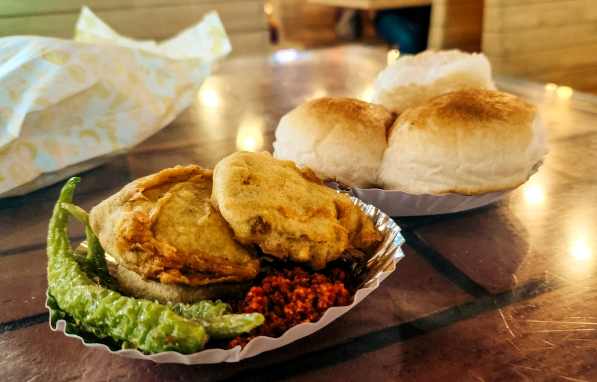

Mumbai Food Tour
Eat where Pooja eats, one stall at a time

The vada goes into the oil, puffs up, comes out golden, and lands in a split pav with green chutney and a smear of dry garlic. Pooja will tell you to eat it in three bites while it's still too hot, fried green chilli on the side if you're feeling brave. That's your first stop. It's how Mumbai eats on the way to work, and it's the right way to start an evening of eating.
From there the pace is easy. You'll stand at a tawa the size of a table while pav bhaji is mashed and folded through butter, then move on to bhel and sev puri, mixed in front of you and made to your spice level — Pooja will ask before the first chutney goes in. Cutting chai in between: half a glass, strong and sweet, the pause this city runs on.
Later you'll head for the lanes around Mohammed Ali Road, where kebab griddles and sweet shops run into the night. They're at their fullest during Ramzan, but the food is there all year. The evening ends the way Pooja likes it to: kulfi cut into slices, or a tall glass of falooda, rose syrup sinking through the milk.
The walk is private — just your party and Pooja. Vegetarian, Jain, easy on the chilli, a stall you've read about and want to try: say so. Every stop is somewhere Pooja eats herself, picked because the food moves fast and never sits. Message on WhatsApp with your dates and any allergies, and she'll plan the evening around them.
The day, stop by stop
- Vada pav to startThe vada comes straight out of the oil and into a split pav with green and dry garlic chutneys — eat it hot.
- Pav bhaji off the tawaWatch it mashed and folded through butter on a griddle the size of a table, then scoop it up with toasted pav.
- Bhel and sev puriPuffed rice, crisp puris and chutneys mixed in front of you, spiced to whatever level you ask for.
- Cutting chaiHalf a glass of strong, sweet tea — the pause between courses, taken standing up like everyone else.
- Mohammed Ali Road kebab lanesGriddles and skewers in lanes that run late into the night — at their fullest during Ramzan, good all year.
- The sweet shopsTrays of mithai in the same lanes; Pooja will point you to whatever is freshest that evening.
- Kulfi or falooda to finishDense kulfi cut into slices, or a tall falooda with rose syrup and vermicelli — your call.
Included
- Pooja as your guide for the whole walk
- A private walk — your party only
- A route planned around your diet, allergies and spice level
- Tastings at each stop (confirm when you book)
- Bottled water for the walk
Not included
- Anything you order beyond the planned tastings
- Taxi or car transfers between areas — can be arranged if needed (ask when booking)
What to bring
- Comfortable closed shoes — pavements are uneven, and wet in monsoon
- An appetite: come hungry, the portions add up across seven stops
- Hand wipes or sanitiser if you like having your own
- A little cash in case something extra catches your eye
Good to know
- Usually an evening walk; timings are flexible, so say what suits you
- Vegetarian and Jain-friendly routes are easy in Mumbai — just say so when booking
- You'll mostly stand and eat at stalls; seating is rare
- During Ramzan the Mohammed Ali Road lanes get very full and run very late — worth it, but expect crowds
- New to Indian street food? Pooja will pace you and steer you past the riskier choices
Fancy this one?
Message Pooja with your dates — she'll answer questions before you commit to anything.
Enquire on WhatsApp